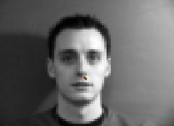
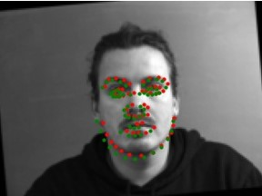

Facial Keypoint Detection with Neural Networks
Overview
Facial points detection can always be a pain in computer vision problems. In this project, I trained Convolutional Neural Networks (CNN) with IMM and Ibug datasets using Pytorch to automate the facial points detection process. I first start with a shallow network to build a nose detection model, then deepen the network to detect the entire face, finally trained with ResNet on a larger dataset (Ibug dataset with 6K images) to achieve better result.
1. Nose Tip Detection
Dataloader
Let's first start with nose detection. We use the IMM Face Databaseas the training dataset, which contains 240 facial images of 40 persons and each person has 6 facial images in different viewpoints. All images are annotated with 58 facial keypoints. All images are resized to 60x80, normalized and converted to grayscale. Here are some instances of the training images with corresponding nose labels:

|
CNN Model
For detecting the nose points, I implemented a shallow CNN with 3 convolutional layers and 2 linear layers. Each convolution layer is followed by max pooling and ReLu. The Model architecture is as follows:
I then train the model for 25 epochs, with batch_size = 1, learning_rate = 0.0001, and achieved the following training & validation loss:
Here are some of the results when model is applied on validation data (Red indicates ground truth point, Green indicates predicted point). Again, similar to nose prediction, the side faces are not being predicted very well. They are being predicted entirely as front faces, which is easier to predict. This is still due to our limited data.
|  |
2. Full Facial Keypoints Detection
Dataloader
In this part, let's predict facil keypoints for the entire face. The dataset is the same as before, but we resize the image to be larger than before (120x160), which captures more information. In order to add more variety to the data, we used data augmentation techniques by randomly rotate the image in a angle between -15 and 15 degrees. Here are some pictures used for training:
CNN Model
I changed the CNN model to have 5 convolutional layers and 2 linear layers. Each convolution layer is followed by max pooling and ReLu. The output layer has 58 * 2 classes (one for each x, y coordinate of a key point).The Model architecture is as follows:
I then train the model for 15 epochs, with batch_size = 4, learning_rate = 0.005, and achieved the following training & validation loss:
Here are some of the results when model is applied on validation data (Red indicates ground truth point, Green indicates predicted point). As you can see, the last two pictures are being predicted very well. Since our dataset is relatively small, and we have limited number of side faces in the dataset, it's hard for the model to predict well on the side faces.
|  |
We can also visualize the learned filters for every convolution layer.
|
|
|
3. Train With Larger Dataset
Dataloader
In order to achieve better and more robust results, we switched to the Ibug dataset, which contains 6666 images, each taken in different backgrounds. Each image is annotated with 68 facial points. Since the face may occupy only a very small fraction of the entire image, we first crop the image to only its face portion, then resize it to 224x224 and rotate it. Finally we normalize and convert it to grayscale. Here are some instances of the training images with corresponding landmarks:
CNN Model
In this part, I used a predefined model Resnet18, which has the following architecture. I also made the following modifications:
- Change conv1's first input to be 1, since we use grayscale images
- Change the number of output class to be 68 * 2, which are the x, y coordinates of each facial point.
I then train the model for 15 epochs, with batch_size = 128, learning_rate = 0.005, and achieved the following training & validation loss:
Then I tested the model on some brand new images, and here are the results. Overall, we can see that the model is performing well at detecting the eyes, but it still fails to detect the shape of the face sometimes. I also submitted the test results on Kaggle, which achieved an SME of 30.7.
Finally, I used the model to predict facial keypoints on some images I chose. Similar to the previous procedures, I first cropped the image to only the face portion, predict the points, then shape back to the original size. The model actually predicted pretty well except for the shape of the face!
|
|
|
|
4. Conclusion
Although this project is very time consuming, I really had fun learning more about CNN and Pytorch. Facial points detection can be very useful in the real world, and I would love to continue explore more training models and methods to achieve better results in the future.